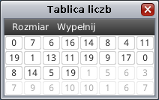
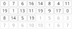

W osobnym oknie pojawiła się tablica liczb.
Twoja funkcja „wyszukaj” powinna odpowiedzieć, czy tej tablicy znajduje się
poszukiwany element. W tym celu w swoim programie powinieneś
skorzystać z funkcji specjalnej „porownaj”, która jest omówiona poniżej.
Funkcja „porownaj”, jak sama nazwa wskazuje służy do porównywania
dwóch liczb. Funkcja porównuje poszukiwany element z elementem tablicy o indeksie
idx, podanym jako parametr funkcji. Funkcja jako wynik zwraca liczbę -1, 0 lub 1, funkcja zwraca:
- 0 jeśli element o indeksie idx jest równy poszukiwanemu elementowi
- -1 jeśli element o indeksie idx jest mniejszy niż poszukiwany element
- 1 jeśli element o indeksie idx jest większy niż poszukiwany element
Oczywiście jeśli podany indeks będzie ujemny albo wykroczy poza rozmiar
tablicy, to program zostanie zatrzymany i zostanie wyświetlony błąd wykonania programu.

Dla przykładu poniżej zaprezentowane jest kilka wywołań funkcji "porownaj",
przyjmijmy, że stan tablicy wygląda tak jak na po lewej stronie:
porownaj(1) – wywołanie funkcji zwróci 0porownaj(5) – wywołanie funkcji zwróci 1porownaj(1) – wywołanie funkcji zwróci -1porownaj(14) – wywołanie funkcji zwróci 1porownaj(3) – wywołanie funkcji zakończy się błędemporownaj(16) – wywołanie funkcji zakończy się błędem